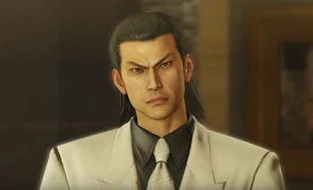

Kiryu has a best friend. His name is Nishiki
Anyone who has played the original Yakuza game or the Kiwami remake will know the context of this meme and why it's funny. Poor innocent Kiryu takes the blame for a murder his best friend and side character Nishiki committed, and when he is released ten years later he can't wait to see his old buddy.
Unfortunately, Nishiki isn't the same guy as before and actually serves as one of the antagonists of the game. That's one way to stop being best friends with someone...
Akira Nishikiyama (錦山 彰, Nishikiyama Akira), often shortened to Nishiki (錦), is a recurring character in the Yakuza series first introduced in the original Yakuza. He is a supporting character in Yakuza 0 as well the main antagonist of Yakuza/Yakuza Kiwami.
